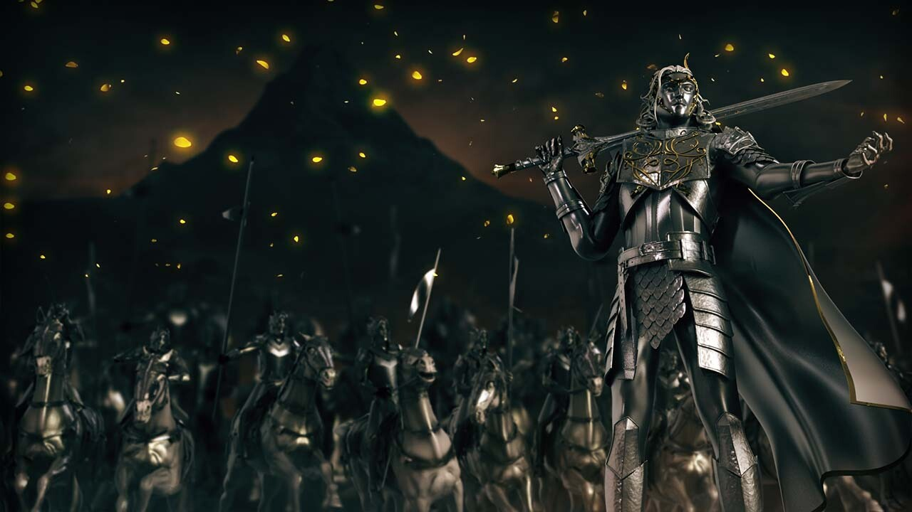
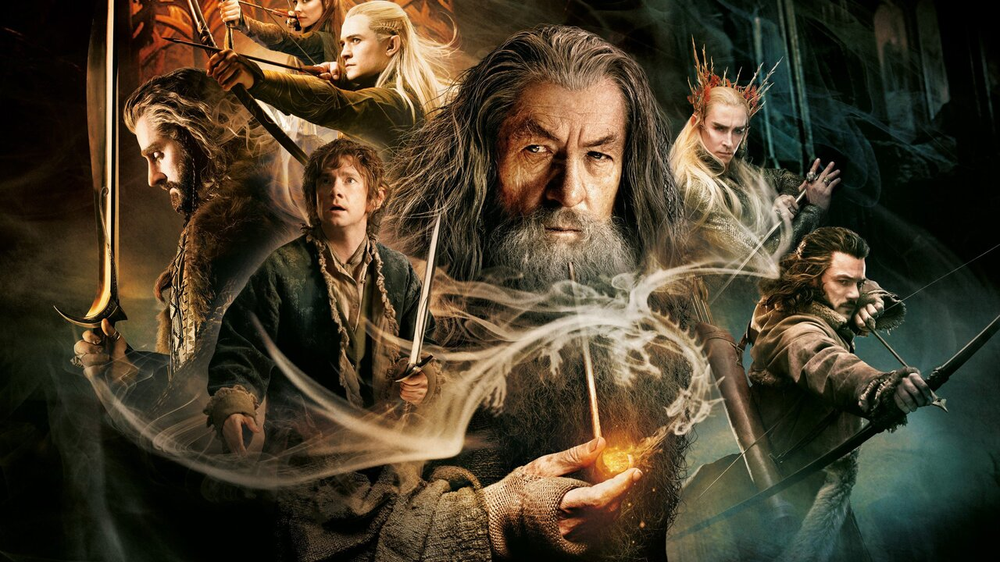
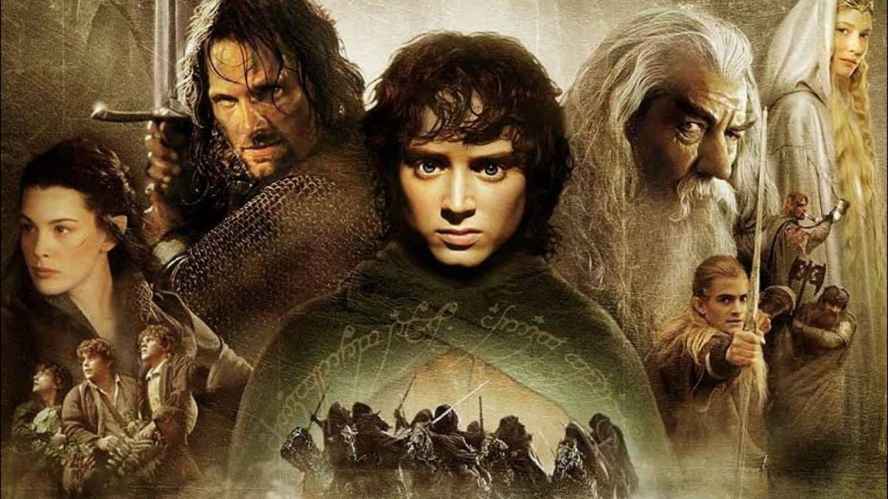

Tolkien'i ve
yarattığı evreni
anlatan çok sayıda kitap bulunuyor. Bu kitapların anlattığı mitolojinin
başından sonuna gitmek isteyenler aslında bütün kitapları okumak zorunda değil. Bu yüzden de ana
kitapları numaralar ile, ara kitapları ise numara.harf şeklinde listeleyeceğiz. Genel olarak
baktığımızda ise sıralama şu şekilde:
- The Silmarillion

Oldukça karmaşık, okuması zor ve
kafa karıştırıcı bir kitap olan Silmarillion, bugünün dizi
yapımcılarının elinde 56 sezon dizi haline gelebilecek kadar dolu bir kitap, adeta bir Orta Dünya
ansiklopedisidir. Aslında baba Tolkien çoğu öyküyü yarım bırakıyor, oğlu ise özetlenmiş ya da
hızlıca anlatılıp geçilmiş sonları babasının sağda solda tuttuğu notlar arasından çıkarıp öyküleri
tamamlıyordu.
Silmarillon'da Orta Dünya'nın yaratılışını, ırkların dünyaya gelişini, Morgoth (sonradan Melkor
dediler) ile olan savaşları, kitaba adını veren Silmaril'lerin yapılışını ve pek çok kahramanın
hikayesini görebiliyoruz. Hobbit ve Yüzüklerin Efendisi serilerinden yıllar öncesine dayanır.
- Hurin'in Çocukları
Melkor'un kendisine meydan okuyan Dor-Lomin kralı Hurin'in, Morwen'den doğan çocukları
Turin
Turambar, Lalaith ve Nienor'un hikayesini anlatır. Hikaye esasen Turin'e odaklanır ve Melkor'un
"kendi iradesi ile şekillendirdiği makus kaderinden" kaçmaya çalışması ele alınır.
- Beren ile Luthien
Bizim Arwen kızın baba tarafından dedesinin dedesi olan ölümlü insan Beren ile Doriath
prensesi, Sabah Yıldızı Luthien'in hikayesi anlatılır. Arwen de Akşam Yıldızı olarak anılır. Beren
ile Luthien'in aşkı elbette romantizm içerir ancak romantik bir hikaye değil, epik bir hikayedir.
Silmarillion'da değiştirilmiş kısımlar da bu kitapta yer alır. Tolkien'in mezar taşında Beren,
karısının mezar taşının altında ise Luthien yazar.
- Gondolin'in Düşüşü
İnsanların arasından çıkan kahramanlardan Tuor, denizlerin efendisi Ulmo'dan gelen
mesajı saklı elf şehri olan Gondolin'e götürür. Sonrasında ise Morgoth'un orduları şehre saldırır.
Kitabın adından belli olduğu üzere Gondolin düşer. Bu eserde de o olaylar ve sonrası anlatılır. Tüm
külliyattaki favori karakterim olan Glorfindel de burada karşımıza çıkar. Şehirden kaçanları
korurken bir balrogla dövüşür, dövüşte balrogu öldürse de kendi de hayatını kaybeder. Bedeni ise
kartallar tarafından alınarak yeniden hayat verilir. Yüzüklerin Efendisi kitaplarında da kendisi
Frodo ve tayfasını tayflardan korur.
- Bitmemiş Öyküler
Aslında bitmemiş öyküler çok geniş bir zamanı kapsıyor ve farklı dönemlerden hikayelere
yer veriyor. En güzeli bu kitabı bölümler halinde serpiştirerek diğer kitapların arasına yedirmek.
Zaman zaman biraz "Hangi çağdaydık biz" diye kafa karıştırıyor ancak o kadar olur.
- Kayıp Öyküler Kitabı 1-2
Tolkien kendisini bir yazardan çok bir çevirmen olarak görürdü. Örnek vermek gerekirse,
Tolkien'e göre Yüzüklerin Efendisi, aslında Orta Dünya'da Bilbo ve Frodo Baggins tarafından yazılan
"Westmarch'ın Kırmızı Kitabı"nın bir çevirisidir. Filmde gördüğümüz kırmızı kitabın yani.
Kayıp Öyküler Kitabı ise Orta Dünya'nın ilk dönemlerini ve hatta oluşumunu bir denizciye anlatılan
hikayeler şeklinde gördüğümüz bir eser. Bizim bildiğimiz gerçek dünyadan bir denizci o fantastik
evrene geçer ve ona bu hikayeler anlatılmıştır. Silmarillion ile hem benzer hem de farklı yanları
vardır. Bir nevi beta sürüm görevi görür. Fantastik evrene geçiş fikrini Tolkien sonrasında çok
kullanmasa da kankası C. S. Lewis, Narnia Günlükleri'nde kullanmıştır.
- Hobbit

Serideki bir sonraki büyük kitap olayı Hobbit'tir. Kısacık kitaptan üç film yapmak için
ortalık çorbaya döndürülmüştür. Kısa öykülerin, şiirlerin ve çeşitli kurguların ardından Tolkien'in
Orta Dünya'ya ciddi bir şekilde adım attığı ilk eseridir. Konuyu ise hepimiz biliyoruz, Bilbo,
Gandalf ve cüceler Yalnız Dağ'a gider, Bilbo yüzüğü bulur, iki dakika boş duramayan Sauron yine bir
savaş patlatır.
Hobbit hem biraz çocuk kitabıdır hem de biraz yetişkinlere hitap eder, her şey dozunda bir değişim
gösterir. Aslında ilk çıkan kitap olmasına rağmen çocuk kitabı olarak görüldüğü için Yüzüklerin
Efendisi gibi bir fırtına koparmamıştır.
- Yüzüklerin Efendisi

Hobbit ile başlayan olaylar zinciri, Yüzüklerin Efendisi serisi ile ilerler. Bugün
fantastik kurgu sevenlere "Yüzüklerin Efendisi'ni okudun mu?" diye sorulmaz, kaç kere okuduğu
sorulur. Öylesine etkili, öylesine önemli bir üçlemedir Yüzüklerin Efendisi.
Özellikle de Peter Jackson'ın çektiği filmlerle birlikte ne kadar Oscar varsa toplayan ve dünya
çapında bir kez daha sansasyon yaratan Yüzüklerin Efendisi,bugün de pek çok hayranı bulunan bir
eser. Gerçek anlamda zamana meydan okumak böyle bir şey. Kitaplarda hepimizin bildiği üzere Tek
Yüzük'ü yok etmek ve Sauron'u durdurmak için verilen mücadele ele alınır.
- Tom Bombadil'in Maceraları
Nereye koysanız giden bu hikayede, kendisi adeta zamanın dışında olan Tom Bombadil'in
şiirleri ve şarkıları yer almaktadır. Ha illa bir yere koyacaksanız Yüzüklerin Efendisi üçlemesi ile
aynı yere koyabilirsiniz, sonuçta bu şarkıları Hobbit'lerimiz o zaman öğrenmiştir.